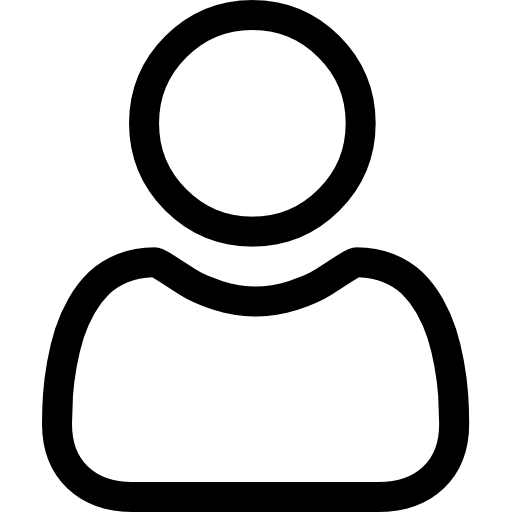

OstravaJmenuji se Michal, studuji Softwarové systémy na Ostravské univerzitě, programuji a stříhám videa.
Baví mě stavět věci od začátku do konce – skripty, bota, web nebo krátké promo video. U kódu řeším, jak co funguje, u videa zase rytmus, zvuk a nápad.
Tři věci, ve kterých vám můžu pomoct.
Napíšu vám skript, bota nebo aplikaci na míru a pomůžu s webem. Programuju v Javě, Pythonu, PHP, C#, C++ či Kotlinu.
Python Java KotlinZ natočeného materiálu sestříhám hotové video s ideálním tempem a čistým výsledným vzhledem pro Vámi vybranou sociální síť. Střihám v DaVinci Resolve, fotky upravuji v programu Krita.
DaVinci Resolve KritaVymyslím nápad, natočím jej a následně sestříhám do krátkého videa pro sociální sítě. Zkušenost mám s tvorbou pro BrickBros či FC Hlubina.
Instagram TikTok YouTube Shorts